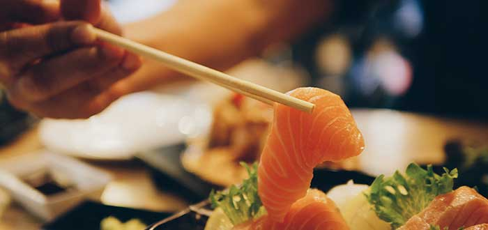

Japón |
| Index Historia y Detalles del Pais Monumentos de Japon Leyendas de Japón Sitios Turisticos |
Cultura: |
¿Cómo es la cultura de Japón?
La cultura de Japón, fuertemente influenciada por China en sus orígenes, tiene más de 2600 años de antigüedad, y se caracteriza por tener una lengua propia, además de religiones y tradiciones específicas, pero combinadas en un complejo proceso de sincretismo sucedido a lo largo de los siglos.
Japón es un país asiático insular, situado en el océano Pacífico, frente a las costas de China y Taiwán. Se compone de un archipiélago de unas 6852 islas y en su limitada superficie de 377.915 km2 alberga a más de 125 millones de habitantes.
Gobernado por una monarquía parlamentaria de larga tradición, este país ha jugado un rol importante en la política asiática e internacional, especialmente en el siglo XX, cuando se alió a la Alemania nazi y la Italia fascista durante la Segunda Guerra Mundial. Su rendición fue uno de los hechos que puso fin a la guerra luego de que las ciudades de Hiroshima y Nagasaki fueran atacadas con bombas atómicas por los Estados Unidos.
Luego de estos hechos, la cultura del país sufrió una profunda transformación, pues adoptó una nueva constitución que promovió la democracia y los derechos individuales, y se produjo una mayor apertura a influencias extranjeras. Así, se adoptaron elementos culturales occidentales en los campos de la música, la moda y el cine, y también se fomentaron la desmilitarización y la paz como valores centrales en la cultura japonesa.
|
 |
Características de la cultura de Japón:
Algunas de las principales características de la cultura de Japón son:
-El idioma más hablado es el japonés.
-Está muy influenciada por la cultura China, en especial en la religión, la arquitectura y las artesanías.
-Las dos religiones predominantes son el sintoísmo, autóctono de Japón, y el budismo, importado de China.
-Las relaciones interpersonales se rigen por el giri, un conjunto de honores, deberes y obligaciones que se deben respetar.
-La vestimenta tradicional típica es el kimono, aunque en la actualidad se utiliza solo para ocasiones especiales.
-El pescado, el arroz y las algas son la base de su gastronomía.
-En las últimas décadas, el cine japonés adquirió mucha relevancia, en especial el animé.
-Los poemas breves conocidos como haikus son una tradición de la literatura japonesa.
-Tiene una gran tradición deportiva, y la ciudad de Tokio fue sede de los Juegos Olímpicos en 1964 y 2020.
|
|
Tradiciones |
Tradiciones japonesas religiosas:
Las tradiciones de la cultura japonesa, en cuanto a la religión, los japoneses son más devotos hacia lo espiritual y las conexiones entre el sintoísmo y el budismo, las cuales coexisten de forma armoniosa y complementaria. De hecho, una de las características culturales de Japón es que fusionan sus creencias con las costumbres, rituales y ocasiones especiales, como bodas, nacimientos, nacimientos y festividades religiosas. |
|
1. Fiesta de Año Nuevo:
Cuando hablamos de cuáles son las tradiciones de Japón, una de las primeras celebraciones que aparece en esta lista de cosas típicas de Japón es la fiesta de Año Nuevo es la festividad más grande y popular de la nación. Históricamente, el inicio de año estaba determinado por calendarios lunisolares antiguos y, por lo general, era cuando se acercaba la primavera; sin embargo, desde 1873, el Año Nuevo japonés oficial se celebra según el calendario gregoriano, el 1 de enero.
Las festividades del Año Nuevo Japonés se llaman Shogatsu y se expanden por al menos dos semanas (o una), dependiendo de la región en la cual se celebre. Por otro lado, el Ganjitsu, que es Día de Año Nuevo (1 de enero) se celebra como un feriado nacional oficial. Vale destacar que varias empresas y oficinas pueden cerrar desde el 29 de diciembre hasta el 3 de enero para salir de viaje y visitar a familiares, amigos, y para participar en distintos rituales y costumbres de la cultura japonesa.
|
|
2. Toka Ebisu
Después del Año Nuevo, el Festival Toka Ebisu es otra de las grandes costumbres japonesas. Durante cinco días de enero, miles de personas se aglomeran en un pequeño santuario sintoísta en Gion, Kioto, para rezar a Ebisu, el dios de la buena fortuna y la prosperidad. Toka significa “el décimo día” y, aunque el festival se centra en celebrar el 10 de enero, tiene una duración de cinco días, así que se extiende hasta el 12 de enero.
Los japoneses y demás visitantes se reúnen para formar parte de un sencillo ritual de oración en el cual piden por el éxito en la vida laboral y en los negocios. En el Toka Ebisu las personas compran ramas de hierba de bambú de la suerte, llamadas Fuku-Zasa, las cuales han sido bendecidas por la doncella del santuario, también compran amuletos, piedras y talismanes de la suerte para adherirlas al bambú, esperando que el futuro esté lleno de riqueza y triunfos.
|
 |
3. O-Bon
El O-Bon (u Obon), es un evento anual que suele celebrarse a mediados de agosto, y está marcado por la visita de los antepasados que visitan a los vivos. Además, una de las cosas representativas de Japón, es que celebraciones como esta se dan en la temporada vacacional, y es por ello que en las tradiciones japonesas, las personas de todo Japón se reúnen para honrar a sus familiares que han fallecido; muchos hacen viajes para visitar los templos locales para orar por ellos y dejarles ofrendas.
Obon es una celebración budista, y también es conocida como el Festival Bon; se puede extender desde el 12 hasta el 16 de septiembre —las fechas pueden variar según la región y la empresa—, porque los japoneses deben verificar que cada ritual se cumpla al pie de la letra. El primer día está hecho para la bienvenida a los antepasados, día en el que se preparan los “caballos espectrales” hechos de pepinos y berenjenas que están sujetas a unos palillos; fungen como los guías del camino para que los ancestros lleguen rápido y partan lentamente. |
|
4. Mamemaki
Para despejar las dudas de cuáles son las costumbres de Japón, enlistamos al Mamemaki, que es una celebración anual que tiene lugar en los distintos santuarios y templos de la nación, los cuales se preparan como parte de las celebraciones del Setsubun, que festeja la llegada de la primavera. El Mamemaki consiste en lanzar frijoles de la suerte para alejar a los demonios milenarios.
La celebración consiste en preparar los frijoles de la suerte, llamados fuku mame (frijoles de soja tostados), y arrojárselos a quienes llevan una máscara de Oni(demonio). En ocasiones, el ritual es tradicional, con voluntarios disfrazados de demonios, pero también puede hacerse de forma aleatoria entre la multitud. Durante la ceremonia el canto clásico es “¡Oni wa soto! ¡Fuku wa uchi!”, que se traduce como “¡Fuera los demonios! ¡Entra la buena fortuna!”. |
|
5. Dondo-Yaki
Tras las celebraciones de Año Nuevo, se retiran las decoraciones tradicionales, que en realidad amuletos. Los japoneses consideran que las cosas del pasado deben romperse y quemarse junto con otros amuletos de la buena suerte (por ejemplo, los muñecos Daruma), en un ritual de fuego llamado Dondo-Yaki. No ven con buenos ojos que los objetos se conserven en casa o sean tirados a la basura.
Dondo-Yaki es una fiesta espiritual en la que la quema de objetos simboliza la ruptura con el pasado y el avance hacia el futuro. Los japoneses preparan hogueras en forma de cono, las cuales están hechas de troncos de bambú y paja, donde arrojan los amuletos y talismanes para que sean incinerados cerca de un río.
|
|
Comida |
Muchas personas tienden a pensar que la gastronomía de Japón es Sushi, Ramen y poco más… ¡Nada más lejos de la realidad! Es cierto que estos platos son los más conocidos porque han conseguido implantarse en occidente a través de una gran multitud de restaurantes japoneses cuya oferta se limita a ellos. Pero podemos afirmar sin temor a equivocarnos que la gastronomía japonesa es una de las más ricas y variadas de todo el mundo.
En el pasado los platos típicos de Japón eran prácticamente una adaptación de la gastronomía china que tenía una gran influencia en el país. En cualquier caso, fue a partir de la Edad Media cuando la cocina japonesa comenzó a evolucionar, encontrar su propio camino y desarrollar la amplia variedad de platos y preparados que podemos encontrar hoy en día. No podemos olvidar que, especialmente en las ciudades japonesas, existe una gran tendencia a comer y cenar fuera de casa. Esto propicia la aparición de un gran volumen de restaurantes, tabernas y puestos de street food, que a su vez, enriquecen la gastronomía Japonesa
|
 |
1. Sushi | 寿司
Cómo no podía ser de otra manera, nuestra selección de platos típicos de Japón debía empezar por su plato más internacional: el sushi. Se trata de un plato cuya base es el arroz cocido y adobado con vinagre de arroz, vino de arroz, azúcar y sal; si bien es cierto que se suele asociar el sushi al pescado y el marisco como acompañantes, existen muchas variedades de sushi que están acompañadas de tortilla, verduras y otros alimentos. |
|
2. Onigiri | お握り
Se trata de una deliciosa bola o triángulo de arroz con relleno en su interior, toppings en su exterior y un alga nori que sirve para agarrarlos. Tradicionalmente el Onigiri se solía rellenar de ciruela encurtida, salmón, kombu o atún. Pero, la flexibilidad que ofrece este plato japonés para experimentar con él hace que hoy en día se puedan encontrar un gran número de variantes y condimentos. |
 |
3. Sashimi | 刺身
Otro de los platos típicos de Japón que con total seguridad debes probar si visitas este país es el Sashimi. Se trata de finos cortes de pescado y marisco, acompañados por salsa de soja, jengibre y wasabi y servidos (normalmente) crudos. El objetivo del jengibre es tomarlo entre pieza y pieza de sashimi para limpiar el sabor de la boca y de este modo poder degustar mejor el sabor. |
 |
4. Sopa de miso | 味噌汁
La sopa de miso es sin lugar a dudas uno de los platos típicos japoneses más tradicionales y arraigados en la cultura gastronómica de este país. Si eres un aficionado a la comida japonesa seguro que ya la has probado, ya sea sola o acompañando en algún otro plato como el Udon.
|
 |
5. Udon | うどん
Otro de los platos típicos de Japón que no podían faltar en nuestra lista es el udon, o mejor dicho, los platos preparados a base de udon. Se trata de un tipo de fideo japonés grueso, hecho de harina de trigo y con un diámetro de entre 6 y 8 mm. |
 |
| Todos los derechos reservados 2025 |
| |